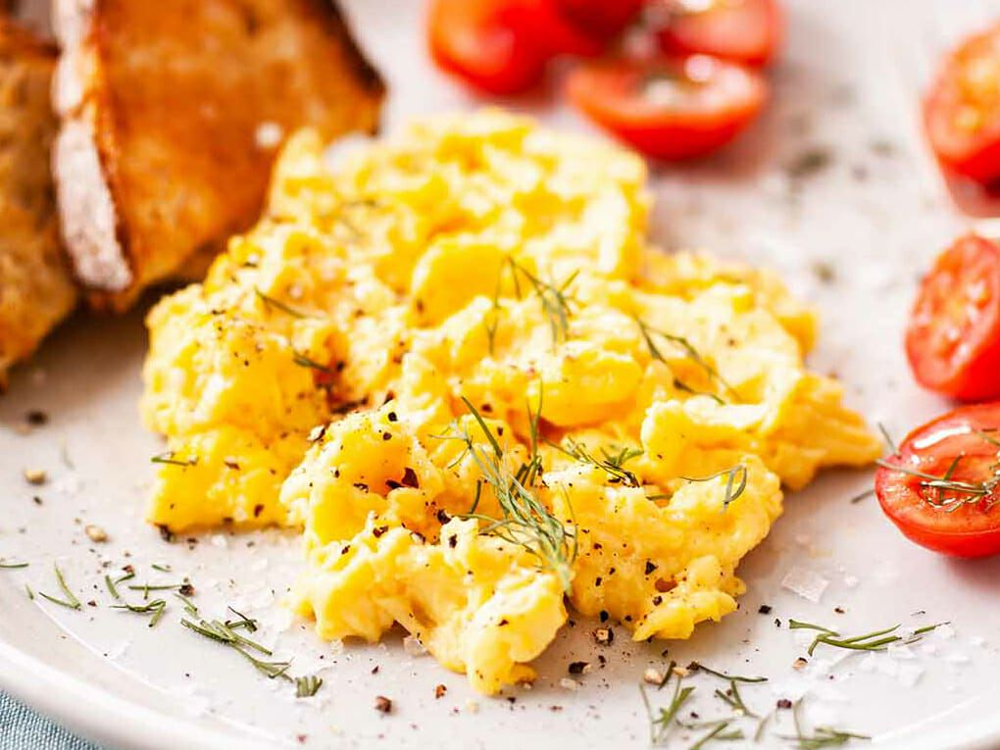

Mankind has used eggs for at least five thousand years. It is known for sure that ostrich eggs were fried by fire in ancient Egypt. The Romans used fried eggs as a dessert with honey. The ancestors of the populace of modern Iran mixed the yolk with milk and spices, and the French, in the middle of the seventeenth century, came to call it an omelet.
It was the French who perfected this dish by adding mushrooms, fresh vegetables, and grated cheese. At the beginning of the 19th century, for the working class in England, a plate of fried eggs and a few slices of bacon was an essential part of the English breakfast and a symbol of well being. Even today in England a plate of scrambled eggs and bacon is a mainstay. Residents of Hong Kong prefer a lightly fried egg with a vegetable garnish. Greeks prepare strapatsada (scrambled eggs) with fresh tomatoes, onions, and a piece of feta cheese. The Japanese, true to their love of rice, if there are eggs, they fry them only with rice.
Right from the start we have a controversy. Do you crack the eggs into a bowl and scramble them there before adding them to the pan, or do you crack them directly into the hot pan and then scramble as they cook?
Each approach has its advantages. Scrambling the eggs in a bowl beforehand permits a more rigorous and intense scrambling. This will generate air into the eggs, which will produce fluffier, creamier eggs in the end. This thorough scrambling also means a more complete commingling of white and yolk, which means stability of texture and color in the finished product. Maybe that doesn’t matter to some, but remember we are seeking life changing scrambled eggs.
On the other hand, cracking the eggs into a hot pan and scrambling them is a much quicker way of doing things and easier on your dishwashing...